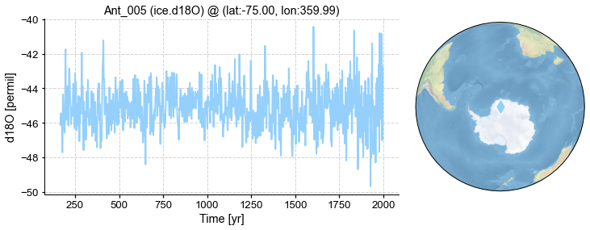

Get the nearest climate for proxies#
In this tutorial, we introduce how to get the nearest climate for proxies with cfr.
[1]:
%load_ext autoreload
%autoreload 2
import cfr
import pandas as pd
import numpy as np
import os
Load the PAGES2k network stored in a pandas DataFrame#
[2]:
df = pd.read_pickle('./data/pages2k_dataset.pkl')
df.columns
[2]:
Index(['paleoData_pages2kID', 'dataSetName', 'archiveType', 'geo_meanElev',
'geo_meanLat', 'geo_meanLon', 'year', 'yearUnits',
'paleoData_variableName', 'paleoData_units', 'paleoData_values',
'paleoData_proxy'],
dtype='object')
Create a ProxyDatabase and load from the pandas DataFrame#
[3]:
pdb = cfr.ProxyDatabase().from_df(df)
Load climate data to ClimateFields#
[5]:
dirpath = './data/icesm_last_millennium_historical'
fd_tas = cfr.ClimateField().load_nc(
os.path.join(dirpath, 'tas_sfc_Amon_iCESM_past1000historical_085001-200512.nc'),
load=True) # load into the memory to accelerate later processing
Get the nearest climate from a ClimateField for a ProxyRecord#
[6]:
pobj = pdb.records['Ant_005']
fig, ax = pobj.plot()

[7]:
pobj.get_clim(fd_tas)
[8]:
pobj.clim['tas'].da
[8]:
<xarray.DataArray 'tas' (time: 13872)>
array([248.87474, 242.98064, 234.44029, ..., 233.60123, 243.2134 ,
249.26338], dtype=float32)
Coordinates:
* time (time) object 0850-01-17 00:00:00 ... 2005-12-17 00:00:00
lat float32 -74.84
lon float32 357.5
Attributes:
long_name: Reference height temperature
units: Kxarray.DataArray
'tas'
- time: 13872
- 248.9 243.0 234.4 231.7 229.3 228.0 ... 228.1 227.7 233.6 243.2 249.3
array([248.87474, 242.98064, 234.44029, ..., 233.60123, 243.2134 , 249.26338], dtype=float32) - time(time)object0850-01-17 00:00:00 ... 2005-12-...
- description :
- time
- long_name :
- time
- standard_name :
- time
array([cftime.DatetimeNoLeap(850, 1, 17, 0, 0, 0, 0, has_year_zero=True), cftime.DatetimeNoLeap(850, 2, 14, 0, 0, 0, 0, has_year_zero=True), cftime.DatetimeNoLeap(850, 3, 17, 0, 0, 0, 0, has_year_zero=True), ..., cftime.DatetimeNoLeap(2005, 10, 17, 0, 0, 0, 0, has_year_zero=True), cftime.DatetimeNoLeap(2005, 11, 16, 0, 0, 0, 0, has_year_zero=True), cftime.DatetimeNoLeap(2005, 12, 17, 0, 0, 0, 0, has_year_zero=True)], dtype=object) - lat()float32-74.84
- description :
- latitude
- long_name :
- latitude coordinate
- standard_name :
- latitude
- units :
- degrees_north
array(-74.8421, dtype=float32)
- lon()float32357.5
- description :
- longitude
- long_name :
- longitude coordinate
- standard_name :
- longitude
- units :
- degrees_east
array(357.5, dtype=float32)
- long_name :
- Reference height temperature
- units :
- K
Get the nearest climate from a ClimateField for a ProxyDatabase#
[9]:
pdb_TRW = pdb.filter(by='ptype', keys=['tree.TRW'])
[14]:
pdb_TRW.del_clim()
pdb_TRW.get_clim(fd_tas, tag='model') # with a tag, the variable name will be modified in format "tag.var"
Deleting the nearest climate for ProxyRecord: 100%|██████████| 354/354 [00:01<00:00, 342.37it/s]
Getting the nearest climate for ProxyRecord: 100%|██████████| 354/354 [02:09<00:00, 2.73it/s]
[14]:
<cfr.proxy.ProxyDatabase at 0x29217d640>
[15]:
pdb_TRW.records['NAm_153'].clim['model.tas'].da
[15]:
<xarray.DataArray 'tas' (time: 13872)>
array([256.63867, 259.30438, 263.68216, ..., 274.59763, 266.72495,
258.0086 ], dtype=float32)
Coordinates:
* time (time) object 0850-01-17 00:00:00 ... 2005-12-17 00:00:00
lat float32 52.11
lon float32 242.5
Attributes:
long_name: Reference height temperature
units: Kxarray.DataArray
'tas'
- time: 13872
- 256.6 259.3 263.7 272.2 276.1 284.6 ... 285.2 281.4 274.6 266.7 258.0
array([256.63867, 259.30438, 263.68216, ..., 274.59763, 266.72495, 258.0086 ], dtype=float32) - time(time)object0850-01-17 00:00:00 ... 2005-12-...
- description :
- time
- long_name :
- time
- standard_name :
- time
array([cftime.DatetimeNoLeap(850, 1, 17, 0, 0, 0, 0, has_year_zero=True), cftime.DatetimeNoLeap(850, 2, 14, 0, 0, 0, 0, has_year_zero=True), cftime.DatetimeNoLeap(850, 3, 17, 0, 0, 0, 0, has_year_zero=True), ..., cftime.DatetimeNoLeap(2005, 10, 17, 0, 0, 0, 0, has_year_zero=True), cftime.DatetimeNoLeap(2005, 11, 16, 0, 0, 0, 0, has_year_zero=True), cftime.DatetimeNoLeap(2005, 12, 17, 0, 0, 0, 0, has_year_zero=True)], dtype=object) - lat()float3252.11
- description :
- latitude
- long_name :
- latitude coordinate
- standard_name :
- latitude
- units :
- degrees_north
array(52.105263, dtype=float32)
- lon()float32242.5
- description :
- longitude
- long_name :
- longitude coordinate
- standard_name :
- longitude
- units :
- degrees_east
array(242.5, dtype=float32)
- long_name :
- Reference height temperature
- units :
- K
[16]:
pdb_TRW.records['NAm_153'].clim.keys()
[16]:
dict_keys(['model.tas'])
[ ]: